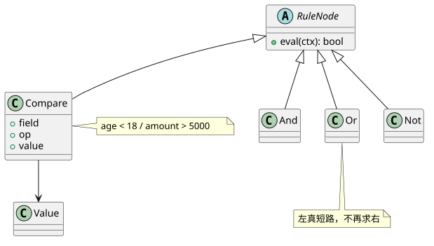

如果条件逻辑长成 (a + b) * c，用一串 if 拼会越来越难改。解释器把表达式拆成树：叶子是数字，节点是运算符，求值就是递归下降。
坏写法是把优先级写进函数：
if (op == '+') return a + b;
if (op == '*') return a * b; /* 括号和嵌套在哪 */运算符一多，优先级和括号就要靠调用顺序硬编码，没法表达“任意嵌套”。
解释器把表达式建成树：Add(2,3) 是一个节点，Mul(Add(2,3),4) 是它的父节点。求值递归到叶子，结构天然表达优先级。
左边是根节点，中间是加法子树，右边是两个数字叶子。
C 版用 kind 标记节点类型，孩子是指针；C++ 版每个节点一个子类，用 unique_ptr 组树。
/* 解释器 · 算术表达式 (2 + 3) * 4
* gcc -std=c11 -Wall -Wextra interpreter.c -o interpreter
*/
#include <stdio.h>
typedef struct expr expr_t;
struct expr {
int kind; /* 0=数字 1=加法 2=乘法 */
int value;
expr_t *l, *r;
};
static int eval(const expr_t *e)
{
switch (e->kind) {
case 0: return e->value;
case 1: return eval(e->l) + eval(e->r);
case 2: return eval(e->l) * eval(e->r);
}
return 0;
}
int main(void)
{
expr_t n2 = { 0, 2, NULL, NULL };
expr_t n3 = { 0, 3, NULL, NULL };
expr_t n4 = { 0, 4, NULL, NULL };
expr_t add = { 1, 0, &n2, &n3 };
expr_t mul = { 2, 0, &add, &n4 };
printf("表达式： (2 + 3) * 4\n");
printf("求值 = %d\n", eval(&mul));
printf("换成 (2 + 3) * 5 只需换一个叶子，树结构不变\n");
return 0;
}表达式： (2 + 3) * 4 求值 = 20 换成 (2 + 3) * 5 只需换一个叶子，树结构不变
// 解释器 · 算术表达式 (2 + 3) * 4
// g++ -std=c++17 -Wall -Wextra interpreter.cpp -o interpreter_cpp
#include <cstdio>
#include <memory>
class Expr {
public:
virtual ~Expr() = default;
virtual int eval() const = 0;
};
class Number final : public Expr {
public:
explicit Number(int v) : v_(v) {}
int eval() const override { return v_; }
private:
int v_;
};
class Add final : public Expr {
public:
Add(std::unique_ptr<Expr> l, std::unique_ptr<Expr> r)
: l_(std::move(l)), r_(std::move(r)) {}
int eval() const override { return l_->eval() + r_->eval(); }
private:
std::unique_ptr<Expr> l_, r_;
};
class Mul final : public Expr {
public:
Mul(std::unique_ptr<Expr> l, std::unique_ptr<Expr> r)
: l_(std::move(l)), r_(std::move(r)) {}
int eval() const override { return l_->eval() * r_->eval(); }
private:
std::unique_ptr<Expr> l_, r_;
};
int main()
{
auto tree = std::make_unique<Mul>(
std::make_unique<Add>(std::make_unique<Number>(2), std::make_unique<Number>(3)),
std::make_unique<Number>(4));
std::puts("表达式： (2 + 3) * 4");
std::printf("求值 = %d\n", tree->eval());
std::puts("换成 (2 + 3) * 5 只需换一个叶子，树结构不变");
return 0;
}表达式： (2 + 3) * 4 求值 = 20 换成 (2 + 3) * 5 只需换一个叶子，树结构不变
| 角色 | C 版 | C++ 版 | 差别意味着什么 |
|---|---|---|---|
| 节点区分 | kind 0/1/2 | 不同子类 + 虚函数 | C 用标记，C++ 用类型 |
| 孩子 | 左右指针 | unique_ptr<Expr> | 都表达二叉树 |
| 求值 | eval() 递归 | eval() 虚函数递归 | 同一套后序 |
| 扩展运算符 | 加一个 kind 分支 | 加一个节点子类 | C 要改 switch，C++ 只加类 |
参考教程：www.runoob.com
unique_ptr 会直接崩；需要共享就上 shared_ptr。生产实例：风控规则 DSL（年龄 / 金额 / 地区）
风控规则每天在变，不能每次改代码发版。规则写成表达式：age < 18 or (amount > 5000 and region == "MO")，解析成 AST 后缓存；每笔交易对同一棵树求值。新增规则只加节点，不改求值器。
or 左边为真就不再求右边，降低延迟。
@startuml
abstract class RuleNode {
+eval(ctx): bool
}
class And
class Or
class Not
class Compare {
+field
+op
+value
}
class Value
RuleNode <|-- And
RuleNode <|-- Or
RuleNode <|-- Not
RuleNode <|-- Compare
Compare --> Value
note right of Compare: age < 18 / amount > 5000
note bottom of Or: 左真短路，不再求右
@enduml